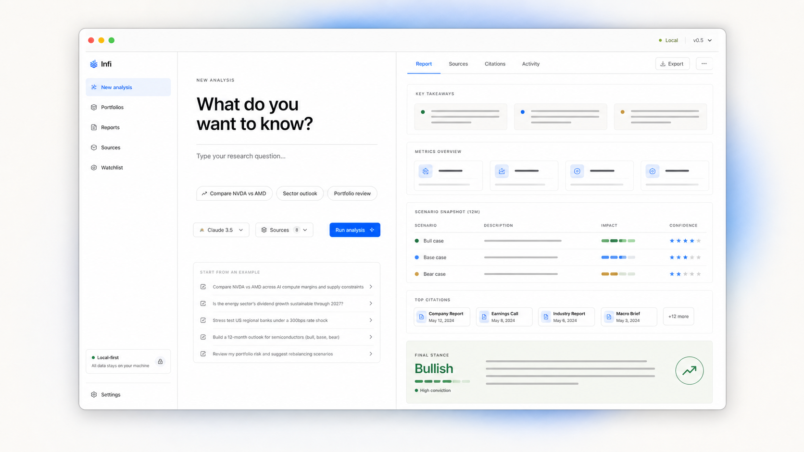
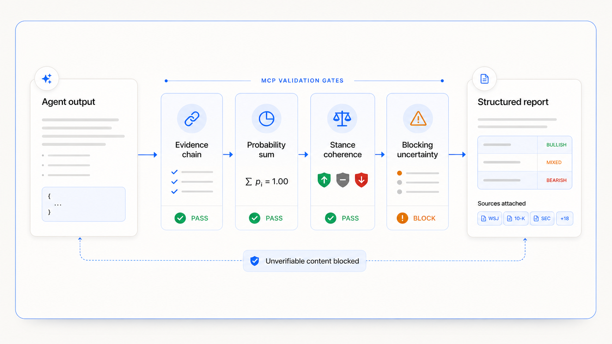
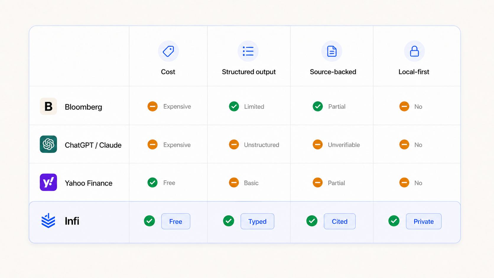
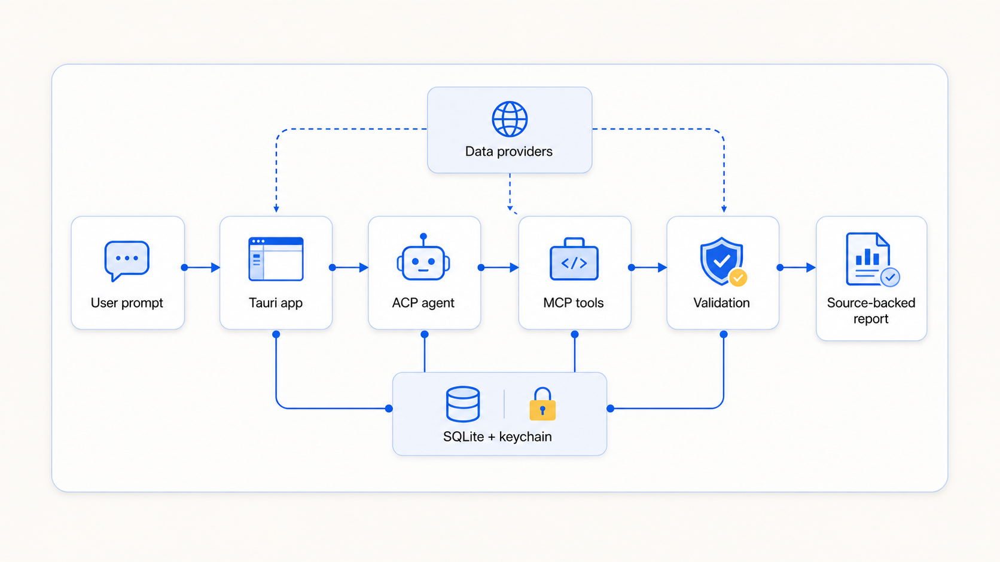

Making investment research transparent
Source-backed claims. Structured reports. No black boxes.
Infi orchestrates AI coding agents to fetch real-time financial data, structure every claim as a source-backed data block, and assemble comprehensive investment reports — all running locally on your machine.
Key Innovation
The agent never emits free-form prose as the final output. Instead, every claim must be submitted through typed MCP (Model Context Protocol) tools with validation gates ensuring evidence chains, probability consistency, and stance coherence.
Three steps. Then you read.
Plain English. "Compare NVDA to AMD." Or add a portfolio and ask where the risk points are.
Infi detects coding agents on your machine — Claude, Codex, Gemini, or your own. Uses the agent's own auth.
Thesis, key numbers, risks, scenarios, stance. Saved on your machine.
Research output with sources attached
Every report is organized into sections you can read, check, and come back to later.
Workbench and generated report

Validation gates before storage

Risks & Mitigation
| Risk | Severity | Mitigation |
|---|---|---|
| Investment Harm | HIGH | Mandatory disclaimer on every report |
| Data Privacy | HIGH | Local-first: SQLite + OS keychain, zero telemetry |
| AI Hallucination | MED | MCP validation gates enforce evidence chains |
| Algorithmic Bias | MED | Multi-agent cross-validation, transparent sources |
Safety-First: "Research only. Not investment advice." — embedded in every FinalStance.
Problem & Context
Problem Statement
- Fragmentation: Analysts manually switch between 15+ data sources per report
- Opacity: AI tools are black boxes — users cannot verify reasoning or data sources
- Unstructured Output: Free-form text requires manual reformatting
Solution Approach
What each report includes
Numbers and claims keep their citations, so you can open the original source.
Bullish, bearish, mixed, or neutral — with confidence and reasons.
Base, upside, and downside cases stored as separate sections.
No account, no telemetry, no cloud sync. Keys in OS keychain.
SEC filings, market data, news — Alpha Vantage, Polygon, Yahoo Finance.
Position reviews, allocation notes, risk notes, and scenario options.
Comparison against existing research workflows

Technical Architecture
User prompt to source-backed report
